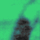
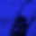

grievous angel press
grievous angel press
gap publishes writing which is externally and internally hypertextually composed (in the key of cyber-gram).
"And I saw my devil, and I saw my deep blue sea."
(Gram Parsons, Return of the Grievous Angel)
|  | I put a spell on you, Linda Marie Walker |
| public desires / private pleasures, Jyanni Steffensen | |
| barcelona, Paul Hewson | |
|  | Architecture and Music, Tim Hungerford |
| 1972, Simon Robb |
|
bad |
links |
|
gap is Linda Marie Walker and Paul Hewson gap is designed and sponsored by Virtual Artists gap co-exists with parallel this page last modified 1 Nov 1995